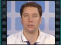
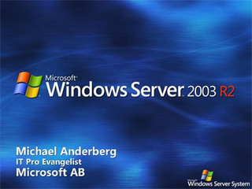
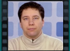
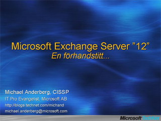
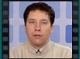
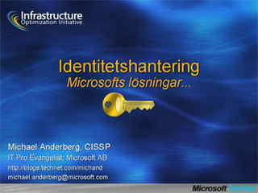
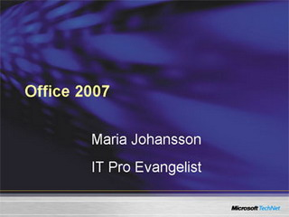
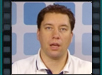
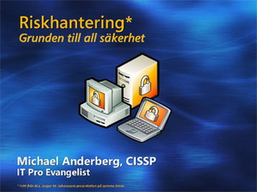

Windows Server 2003 R2


Speaker(s): Michael Anderberg
Microsoft Exchange Server "12": En Förhandstitt...


Speaker(s): Michael Anderberg
Identitetshantering: Microsofts Lösningar...


Speaker(s): Michael Anderberg
Office 2007

Speaker(s): Maria Johansson
Riskhantering - grunden till all säkerhet


Speaker(s): Michael Anderberg